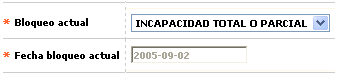
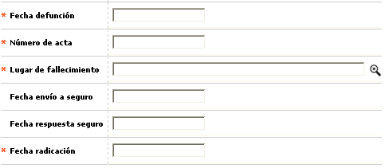

Novedad bloqueo persona
En este formulario invocado desde la opción ingreso de novedades, (core) y que aplica exclusivamente para clientes personas naturales, la entidad puede registrar el fallecimiento o incapacidad legal dictaminada que afecte a cualquiera de sus clientes.

Cuando el bloqueo es por fallecimiento, se habilitan los campos en los cuales se muestra la información adicional requerida como es la fecha, lugar, acta, entre otros, información que le servirá de soporte para efectuar las reclamaciones ante las aseguradoras según corresponda.

Descripción de campos
Bloqueo actual |
En este campo tipo combo, obligatorio, se puede seleccionar entre Incapacidad total o parcial y Fallecido el bloqueo tipo persona que se requiere asociar al cliente. |
Fecha bloqueo actual |
Campo de salida, se muestra en formato YYYY-MM-DD la fecha de proceso en que se está ingresando la novedad del bloqueo de plástico. Para el caso de bloqueos ya existentes, muestra la fecha en la cual se le aplicó a la tarjeta o crédito |
Fecha defunción |
En este campo obligatorio, que se habilita cuando el bloqueo es Fallecido, se registra en formato YYYY-MM-DD la fecha en la cual se producto el deceso del cliente. |
Número de acta |
Campo alfanumérico de 20 posiciones, obligatorio, en el cual se registra el número del acta en la que consta la defunción del cliente. |
Lugar de fallecimiento |
En este campo obligatorio con lista de valores, se selecciona la ubicación correspondiente a la ciudad en la cual falleció el cliente. |
Fecha envío seguro |
Campo no obligatorio en formato YYYY-MM-DD en el que se registra la fecha en que la entidad inicia los trámites o gestiones ante la compañía de seguros tendientes a obtener el pago de los saldos insolutos de las obligaciones que el cliente fallecido tenía con la entidad. |
Fecha respuesta seguro |
En este campo no obligatorio, con formato YYYY-MM-DD se registra la fecha en que la compañía de seguros emite alguna respuesta a la reclamación presentada por la entidad. |
Fecha bloqueo actual |
Campo de salida, se muestra en formato YYYY-MM-DD la fecha de proceso en que se está ingresando la novedad del bloqueo del cliente. Para el caso de bloqueos ya existentes, muestra la fecha en la cual se le aplicó al cliente. |